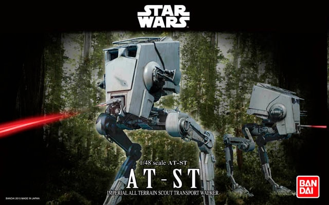
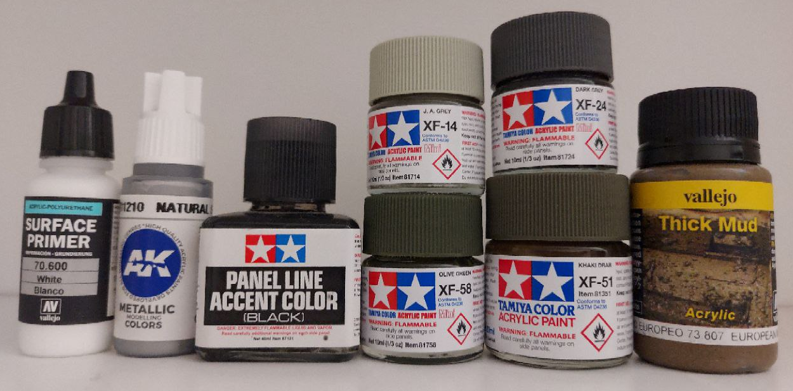
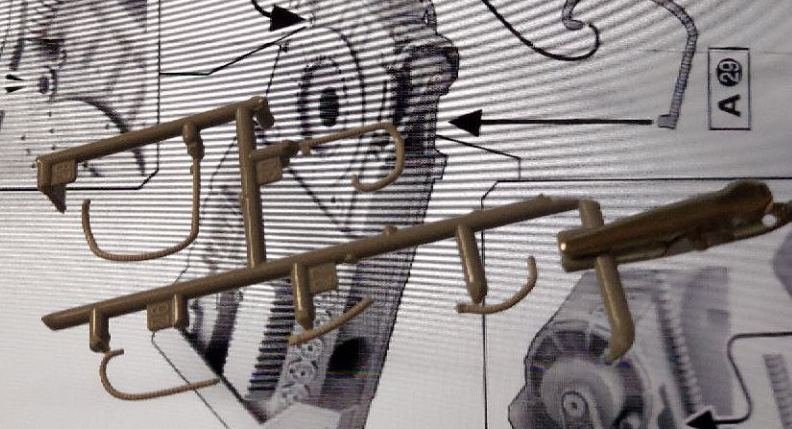
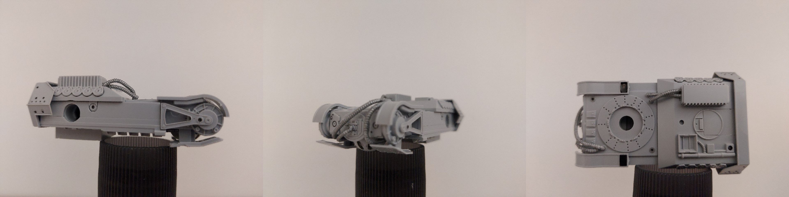
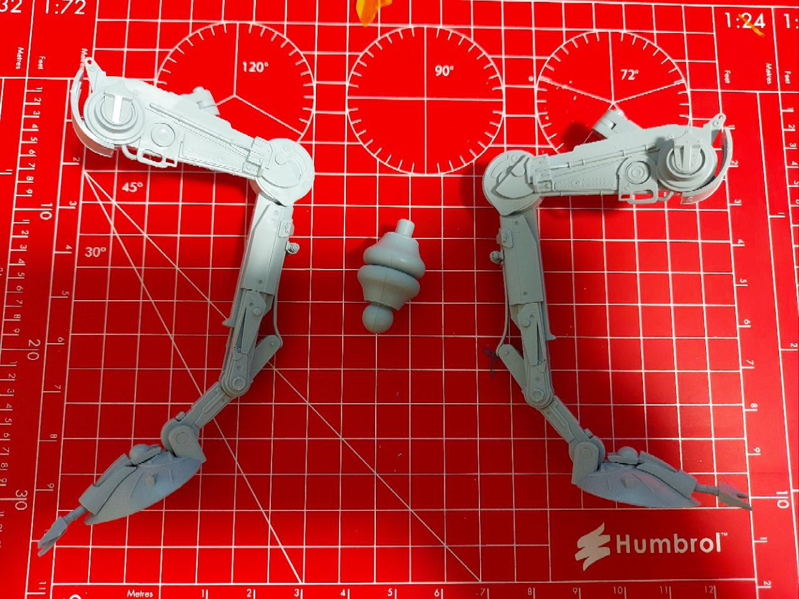
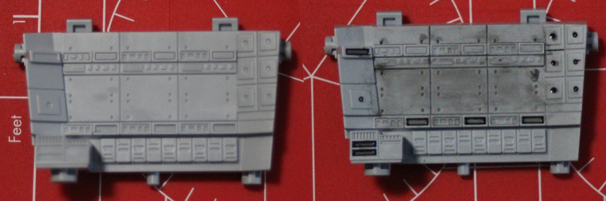

Fernando Garcia
Home Research Blog Other About me
AT-ST 1/48
I started this model on Sunday, December 4th 2022. The model was finished on the 5th of June, 2023. This model of the Imperial All Terrain Scout Transport Walker comes with 2 pilots and Chewbacca.
Although the kit comes pre-painted (for the most part), I will be adding additional details using:
- Vallejo White Surface primer.
- AK 11210 (metallic) Natural Steel paint.
- Tamiya Black Panel Line accent color.
- Tamiya XF-58 Olive green paint.
- Tamiya XF-51 Khaki Drab paint.
- Tamiya XF-14 J. A. Grey paint.
- Tamiya XF-24 Drak Grey paint.
- Vallejo Thick Mud.
Torso
This is the first thing to built following the manual:

The only things that were painted for this section were the little hoses/tubes with AK 11210 (metallic) Natural Steel paint.
A lot of panel lines were painted with Tamiya's Black Panel Line accent color. The end result looks like:
Legs and Neck (December 6, 2022)
Here's a picture of the legs and neck before painting and adding details:
Minifigures and Cockpit (June 5, 2023)
After a long pause due to school, I was able to come back and finish the most detailed parts of this model: the minifigures and the cockpit.
As my model experience so far consisted of big mechas or machines, these 2 parts were certainly a challenge. I realized not too long after starting that my brushes were not small enough. Still the results came out better than I was expecting!
A preliminary coat of primer was applied to both pilots:

At this point I decided on also work on Chewbacca. This way all the minifigures would be ready at the same time.

The light green/grey on the pilots' suits is Tamiya's XF-14 J.A. Grey. The boots were painted with Tamiya's XF-24 Dark Grey The googles/shades were painted with primer only (Vallejo Mecha Primer Black). Chewbacca's bandolier was painted with the same Vallejo Black primer, and then AK11210 Natural Steel was used for the accents. I decided to paint the bag in the bandolier using the same Tamiya's XF-14 J.A. Grey used for the pilots' suits.

A combination of AK11089 Blood red, AK11045 Deep yellow, and White Vallejo surface primer was used to get a skin tone color for the pilots.

While waiting for the minifigures to dry, I added some details to the inside of the cockpit:
Due to the lack of small brushes, I decided on only giving some wear and use looks to the inside. Ideally, some color would have been fantastic.
With dry minifigures, I painted their belts/vests using Tamiya's XF-51 Khaki Drab.

The rest of the cockpit was built keeping the original tones for the most part.


I decided on going for an open look. The front windows and the top hatch are open, and through the hatch Chewbacca can look out from inside the cabin.

Final details were added to the cockpit. In particular, hoses were painted in AK11210 Natural Steel.

The inside of the cockpit can be seen if we look closely:

Complete model
At this point, the model was able to stand by itself for the first time.

After finishing adding all of the weapons, I took some pictures over a background in Endor.


Baseplate and weathering
The base included with the model is a brown piece of plastic. I originally planned on trying out Vallejo's Thick Mud Acrylic Paste.
After reading a bit on how to use it, I learned that it also acts as a glue. For this reason, I decided on acquiring a few diorama plants and other environmental details to improve the looks of this baseplate.

I started with superficial dirt weathering on the legs using Tamiya's Weathering Master (model C). This was my first time using this. It was a bit strange at first, but after a few attempts I got a better grip on how it should be applied.

Minimal dirt spots were put to leave room to add oil/scratch/chipping marks.


Using a ripped piece of sponge, I was able to paint black stains on certain parts of the body to give some oil/scratch/chipping marks.
With pretty much 98% of the weathering was completed on the body, I started working on the baseplate. A first layer of Vallejo Thick Mud was applied using a plastic knife.
The consistency of this material is like soft butter, but sticky as peanut butter. After covering a few zones, my technique started to improve.

One big mistake is to use the whole blade of the knife. This paste is easier to manipulate if we only work with the tip, that is, like a spatula.
One I finished laying down a decently thick layer of the mud, I placed a bunch of plants and rocks. The mud by itself looks quite good, but the small rocks bring it to life without a doubt!

It was quite unclear how the Tamiya's Weathering Master's brown tones were going to blend with the thick mud paste, but after putting some mud over the legs I realized it was a good decision to use a bit of both.
Final pictures